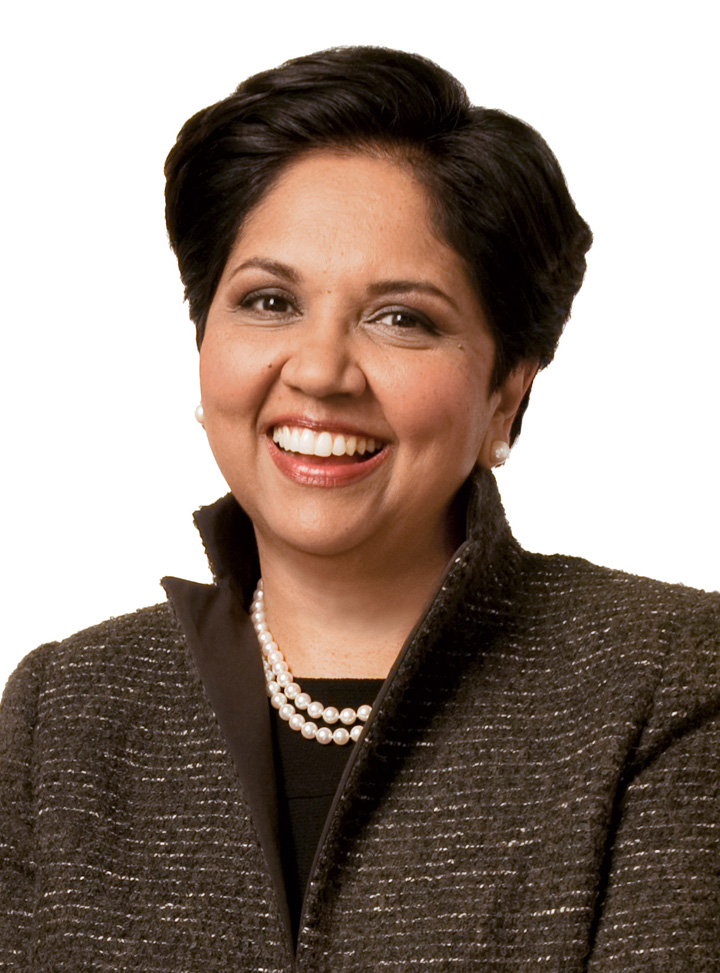

Figure 10.3
Source: Used by permission of PepsiCo Incorporated.
She is among the top 100 most influential people according to Time magazine’s 2008 list. She has also ranked number 4 in Forbes’s “Most Influential Women in the World” (2010), number 1 in Fortune’s “50 Most Powerful Women” (2006 through 2009), and number 22 in Fortune’s “25 Most Powerful People in Business” (2007). The lists go on and on. To those familiar with her work and style, this should come as no surprise: Even before she became the CEO of PepsiCo Inc. (NYSE: PEP) in 2006, she was one of the most powerful executives at PepsiCo and one of the two candidates being groomed for the coveted CEO position. Born in Chennai, India, Nooyi graduated from Yale’s School of Management and worked in companies such as the Boston Consulting Group Inc., Motorola Inc., and ABB Inc. She also led an all-girls rock band in high school, but that is a different story.
What makes her one of the top leaders in the business world today? To start with, she has a clear vision for PepsiCo, which seems to be the right vision for the company at this point in time. Her vision is framed under the term “performance with purpose,” which is based on two key ideas: tackling the obesity epidemic by improving the nutritional status of PepsiCo products and making PepsiCo an environmentally sustainable company. She is an inspirational speaker and rallies people around her vision for the company. She has the track record to show that she means what she says. She was instrumental in PepsiCo’s acquisition of the food conglomerate Quaker Oats Company and the juice maker Tropicana Products Inc., both of which have healthy product lines. She is bent on reducing PepsiCo’s reliance on high-sugar, high-calorie beverages, and she made sure that PepsiCo removed trans fats from all its products before its competitors. On the environmental side, she is striving for a net zero impact on the environment. Among her priorities are plans to reduce the plastic used in beverage bottles and find biodegradable packaging solutions for PepsiCo products. Her vision is long term and could be risky for short-term earnings, but it is also timely and important.
Those who work with her feel challenged by her high-performance standards and expectation of excellence. She is not afraid to give people negative feedback—and with humor, too. She pushes people until they come up with a solution to a problem and does not take “I don’t know” for an answer. For example, she insisted that her team find an alternative to the expensive palm oil and did not stop urging them forward until the alternative arrived: rice bran oil.
Nooyi is well liked and respected because she listens to those around her, even when they disagree with her. Her background cuts across national boundaries, which gives her a true appreciation for diversity, and she expects those around her to bring their values to work. In fact, when she graduated from college, she wore a sari to a job interview at Boston Consulting, where she got the job. She is an unusually collaborative person in the top suite of a Fortune 500 company, and she seeks help and information when she needs it. She has friendships with three ex-CEOs of PepsiCo who serve as her informal advisors, and when she was selected to the top position at PepsiCo, she made sure that her rival for the position got a pay raise and was given influence in the company so she did not lose him. She says that the best advice she received was from her father, who taught her to assume that people have good intentions. Nooyi notes that expecting people to have good intentions helps her prevent misunderstandings and show empathy for them. It seems that she is a role model to other business leaders around the world, and PepsiCo is well positioned to tackle the challenges the future may bring.
Case written by [citation redacted per publisher request]. Based on information from Birger, J., Chandler, C., Frott, J., Gimbel, B., Gumbel, P., et al. (2008, May 12). The best advice I ever got. Fortune, 157(10), 70–80; Brady, D. (2007, June 11). Keeping cool in hot water. BusinessWeek. Retrieved April 30, 2010, from http://www.businessweek.com/magazine/content/07_24/b4038067.htm; Compton, J. (2007, October 15). Performance with purpose. Beverage World, 126(10), 32; McKay, B. (2008, May 6). Pepsi to cut plastic used in bottles. Wall Street Journal, Eastern edition, p. B2; Morris, B., & Neering, P. A. (2008, May 3). The Pepsi challenge: Can this snack and soda giant go healthy? CEO Indra Nooyi says yes but cola wars and corn prices will test her leadership. Fortune, 157(4), 54–66; Schultz, H. (2008, May 12). Indra Nooyi. Time, 171(19), 116–117; Seldman, M. (2008, June). Elevating aspirations at PepsiCo. T+D, 62(6), 36–38; The Pepsi challenge (2006, August 19). Economist. Retrieved April 30, 2010, from http://www.economist.com/business-finance/displaystory.cfm?story_id=7803615.